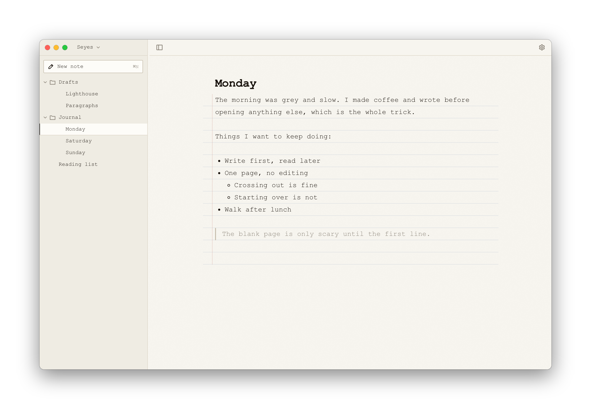

A place to write, on your own computer.
Seyes keeps everything you write as plain text files in a folder on your Mac. There's no account and no cloud, and nothing to sign up for.
Download for MacSeyes keeps everything you write as plain text files in a folder on your Mac. There's no account and no cloud, and nothing to sign up for.
Download for Mac
Seyes is new and isn't signed by Apple yet, so the first time you open it macOS asks you to confirm. This is exactly what you'll see. You only do it once.
Open Seyes.dmg from your Downloads folder. A window appears with Seyes and your Applications folder. Drag Seyes onto Applications.
Open Seyes from Applications. macOS shows a box saying "Seyes" Not Opened. Click Done.
Don't click Move to Trash. That throws the app away and you'd have to start again.
What you'll see. Click Done.
Open System Settings and click Privacy & Security in the sidebar. Scroll down to the Security section. Next to the line about Seyes, click Open Anyway.
Near the bottom of Privacy & Security.
macOS asks one last time. Click Open Anyway and enter your password or use Touch ID. Seyes opens and asks where to keep your writing. It suggests a folder that stays on your Mac. From now on it opens like any other app.
Clicked Move to Trash by accident? Open the Trash, drag Seyes back into Applications, and start again from step 2.
Apple lets apps skip this warning if the developer pays for a yearly certificate and sends each version to Apple to be scanned. Seyes doesn't have one yet. The warning means Apple hasn't checked the app. It doesn't mean something is wrong with it.
If you'd rather check for yourself, all of Seyes' code is on GitHub, and the file you download is built from it.
In Terminal, run shasum -a 256 ~/Downloads/Seyes.dmg. The result should match the one listed on the release page. For version 0.5 it's 7c2fbe4d50e122db154bf3b6b2e7fc739c3a044c32c6dcb1480bcfda0464071b.
Seyes is a window onto a folder. Your writing never lives inside the app.
Every note is a .md file. Open it in TextEdit, back it up, or put it in Git.
No account and no analytics. Seyes only goes online if you choose Check for Updates.
Stop using Seyes tomorrow and your writing is still right there in its folder.
To update, choose Check for Updates in the Seyes menu. If there's a new version it opens the download, and you drag it into Applications to replace the old one. Until Seyes is signed, macOS asks you to confirm each new version the same way as the first time. Your writing isn't touched.
To remove Seyes, drag it from Applications to the Trash. Your writing stays in its folder.